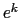
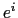

<!DOCTYPE HTML PUBLIC "-//W3C//DTD HTML 3.2 Final//EN">

<!--Converted with LaTeX2HTML 2002-2-1 (1.70)
original version by:  Nikos Drakos, CBLU, University of Leeds
* revised and updated by:  Marcus Hennecke, Ross Moore, Herb Swan
* with significant contributions from:
  Jens Lippmann, Marek Rouchal, Martin Wilck and others -->
<HTML>
<HEAD>
<TITLE>Gradient Evaluation Methods</TITLE>
<META NAME="description" CONTENT="Gradient Evaluation Methods">
<META NAME="keywords" CONTENT="osUsersManual_1">
<META NAME="resource-type" CONTENT="document">
<META NAME="distribution" CONTENT="global">

<META NAME="Generator" CONTENT="LaTeX2HTML v2002-2-1">
<META HTTP-EQUIV="Content-Style-Type" CONTENT="text/css">

<LINK REL="STYLESHEET" HREF="osUsersManual_1.css">

<LINK REL="next" HREF="node59.html">
<LINK REL="previous" HREF="node57.html">
<LINK REL="up" HREF="node55.html">
<LINK REL="next" HREF="node59.html">
</HEAD>

<BODY >
<!--Navigation Panel-->
<A NAME="tex2html971"
  HREF="node59.html">
</A> 
<A NAME="tex2html967"
  HREF="node55.html">
</A> 
<A NAME="tex2html961"
  HREF="node57.html">
</A> 
<A NAME="tex2html969"
  HREF="node1.html">
</A>  
<BR>
<B> Next:</B> <A NAME="tex2html972"
  HREF="node59.html">Hessian Evaluation Methods</A>
<B> Up:</B> <A NAME="tex2html968"
  HREF="node55.html">Using OSInstance Methods: High</A>
<B> Previous:</B> <A NAME="tex2html962"
  HREF="node57.html">Function Evaluation Methods</A>
 &nbsp; <B>  <A NAME="tex2html970"
  HREF="node1.html">Contents</A></B> 
<BR>
<BR>
<!--End of Navigation Panel-->

<H3><A NAME="SECTION000123300000000000000">
Gradient Evaluation Methods</A>
</H3>

<P>
One <TT>OSInstance</TT> method for gradient calculations is
<PRE>
SparseJacobianMatrix *calculateAllConstraintFunctionGradients(double* x, double *objLambda,
     double *conLambda, bool new_x, int highestOrder)
</PRE>
If a call has been placed to <TT>calculateAllConstraintFunctionValues</TT> with <TT>highestOrder = 0</TT>, then the appropriate call to get gradient evaluations is
<PRE>
calculateAllConstraintFunctionGradients( x, NULL, NULL,  false, 1);
</PRE>
Note that in this function call <TT>new&#5;Fx = false</TT>. This prevents a call to <TT>forwardAD()</TT> with order 0 to get the function values.

<P>
If, at the current iterate, the Hessian of the Lagrangian function is also desired then an appropriate call is
<PRE>
calculateAllConstraintFunctionGradients(x, objLambda, conLambda, false, 2);
</PRE>
In this case, if there was a prior call
<PRE>
calculateAllConstraintFunctionValues(x, w, z,  true, 0);
</PRE>
then only first and second derivatives are calculated, not function values.

<P>
When calculating the gradients, if the number of nonlinear variables exceeds or is equal  to the number of rows,  a <TT>forwardAD(0, x)</TT> sweep is used to get the function values,  and   a <TT>reverseAD(1, )</TT>  sweep for each unit vector   in the row space  is used to get the vector of first order partials for each row in the constraint Jacobian.  If the number of nonlinear variables is less then the number of rows then a <TT>forwardAD(0, x)</TT> sweep  is used to get the function values and a <TT>forwardAD(1,  )</TT>  sweep for each unit vector   in the column space is used to get the vector of first order partials for each column in the constraint Jacobian.

<P>
Two other gradient methods are
<PRE>
SparseVector *calculateConstraintFunctionGradient(double* x,
    double *objLambda, double *conLambda,  int idx, bool new_x, int highestOrder);
</PRE>
and
<PRE>
SparseVector *calculateConstraintFunctionGradient(double* x, int idx,
    bool new_x );
</PRE>

<P>
Similar methods are available for the objective function; however the objective function gradient methods treat the gradient of each objective function as a dense vector.

<P>
<HR>
<!--Navigation Panel-->
<A NAME="tex2html971"
  HREF="node59.html">
</A> 
<A NAME="tex2html967"
  HREF="node55.html">
</A> 
<A NAME="tex2html961"
  HREF="node57.html">
</A> 
<A NAME="tex2html969"
  HREF="node1.html">
</A>  
<BR>
<B> Next:</B> <A NAME="tex2html972"
  HREF="node59.html">Hessian Evaluation Methods</A>
<B> Up:</B> <A NAME="tex2html968"
  HREF="node55.html">Using OSInstance Methods: High</A>
<B> Previous:</B> <A NAME="tex2html962"
  HREF="node57.html">Function Evaluation Methods</A>
 &nbsp; <B>  <A NAME="tex2html970"
  HREF="node1.html">Contents</A></B> 
<!--End of Navigation Panel-->
<ADDRESS>
Kipp Martin
2008-01-16
</ADDRESS>
</BODY>
</HTML>
